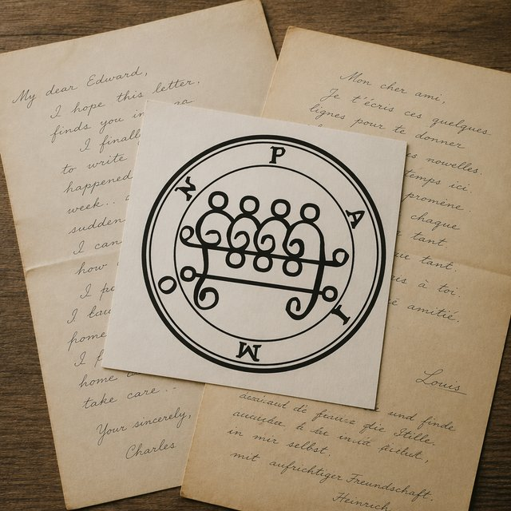
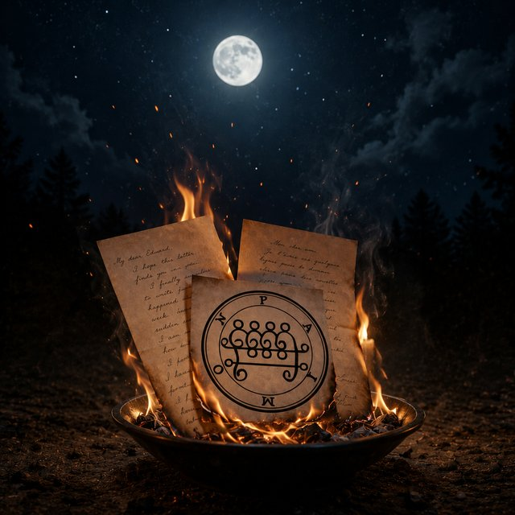
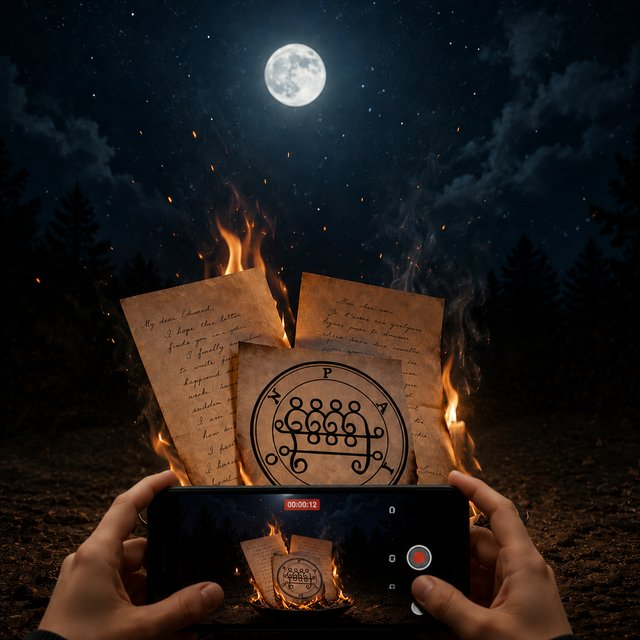
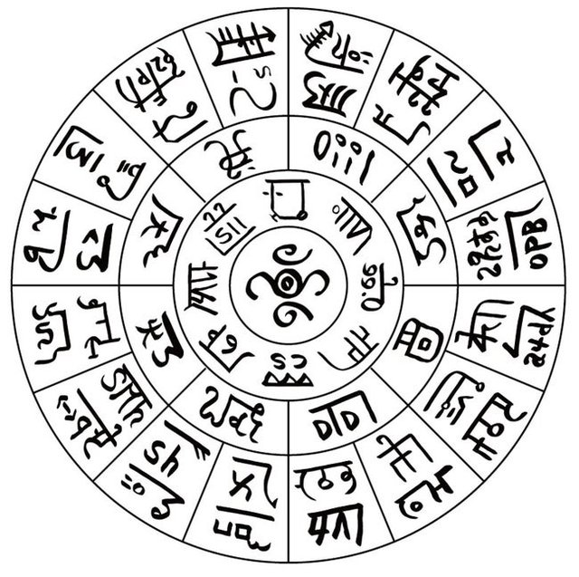
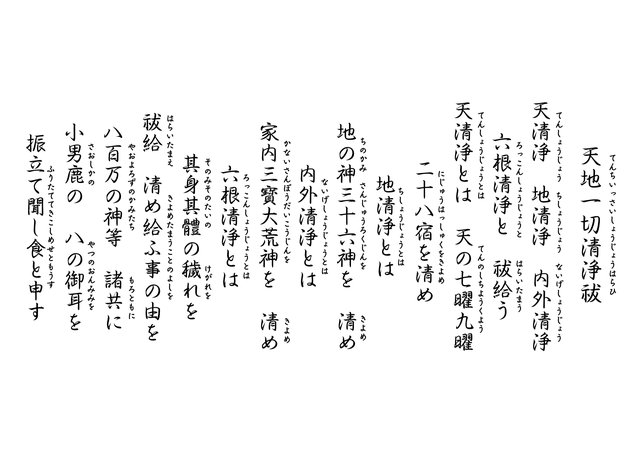
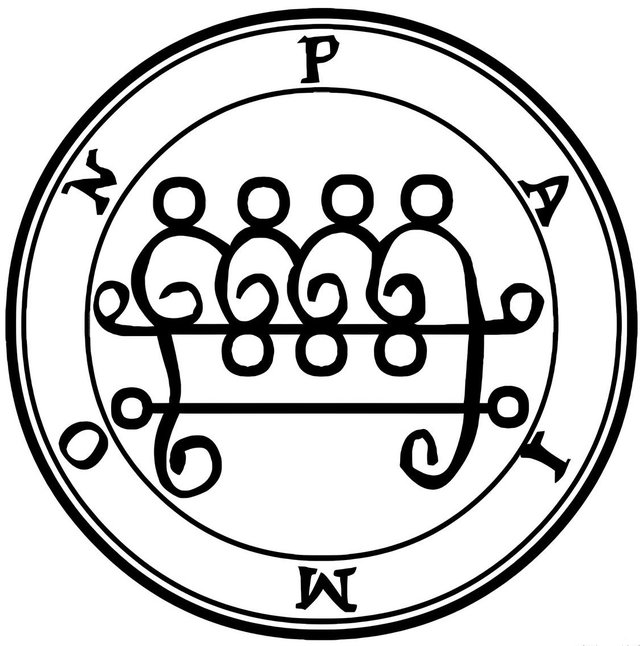

Moon & Fire
Your words, entrusted to a sigil or a sacred script,
and cleansed by fire under the new moon and the full moon.
What this is
Japan has an old tradition called otakiage — the ceremonial burning of things that have served their purpose. Old amulets, letters, dolls that have been loved too long to simply throw away. The fire is not a promise. It is a farewell, done properly.
NIKO TSUKIHI turns that custom toward the letters we write about our feelings. Twice a month, in rhythm with the sky. Under the full moon, write what you wish to release. Under the new moon, what you wish to welcome. Send it through a form, and it is burned with care, together with a sigil or a line of sacred script chosen for your intention.
The ceremony is filmed and sent to you as a private link. The moon in the night sky, and your words returning to smoke beneath it. That record is everything you receive.
Choose a level, and you will receive the link to the letter form.
Type it into the form, or photograph your handwriting and send the image — which we will never read. It is printed and burned as it is. Letters must arrive at least three days before each ceremony.
On the night of the new moon or the full moon, your letter is printed, paired with a sigil chosen for your theme, and returned to fire.
Within a few days, a private video link is sent to your email.
Release
Anger, grief, regret, worry.
A night to put it into words and let it go to fire.
Welcome
Beginnings, health, work, connection.
A night to name what you hope for.

One design — a Japanese sacred script, a Shinto prayer, or a Western sigil — selected for the theme of your letter.

A few minutes in which fire and attention are spent on your feelings alone, quietly, under the moon.

The ceremony, filmed and sent as a private link. Yours to return to whenever you wish.
Each design comes from the same catalogue used in the NIKO TRACE tracing sheets. Choose a family yourself, or leave the choice to us and we will select one for your theme.



All dates in Japan Standard Time
We promise no results and no benefits. What we offer is the ceremony itself: a few minutes in which fire and attention are spent on your words, and a record of that moment. What it means is entirely yours to decide.
No. This is not performed at a shrine or temple, and it is not a formal religious observance. It is a ceremony inspired by the Japanese custom of otakiage — a way of ending something properly.
That is your choice. If you send a photograph of your handwritten letter, we will not read it — it is printed and burned as it is. If you type it into the form, the text may be seen during preparation.
You choose on the form: initials only, or nothing at all.
No. Letters and uploaded images are not returned. Sending them away is the point of the ceremony.
At any time, through your Buy Me a Coffee account, or by writing to us.
No ceremony is held for you that cycle, and it cannot be carried over. If there is nothing you wish to release or welcome, consider pausing or cancelling for that month.